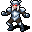
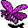

透明化 Invisibility
英語版 CrawlWiki の記事「Invisibility」(0.34 向け、2026-05-31 版)の翻訳です。原文の著者は編集履歴をご覧ください。
このページは呪文の透明化についての記事だ。アイテムのエゴについては透明化(エゴ)を、状態については透明を参照。
| 術者を透明にする。 |
透明化はモンスター専用の呪文で、術者を透明にする。透明なものが見えないプレイヤーには、術者の姿をとらえにくくなる。くわしくは透明のページを参照。
照明、光輪、焼夷の炎で照らし出されている相手には、この呪文は効かない。
透明化を唱える敵は次のとおり。
- L
 太古のリッチ
太古のリッチ - g
 ボガート
ボガート - e

闇エルフの騎士 - q
 ドラコニアンの騎士
ドラコニアンの騎士 - L
 恐怖のリッチ
恐怖のリッチ - x
 エリカ
エリカ - O
 エロルカ
エロルカ - m
 イルスィウ
イルスィウ - @
 キルケー
キルケー - L
 リッチ
リッチ - f
 モーリス
モーリス - p
 オカルティスト
オカルティスト - O
 オーガの魔術師
オーガの魔術師 - o
 オークの魔術師
オークの魔術師 - @
 プシュケ
プシュケ - W
 シャドウガースト
シャドウガースト - @
 シグムンド
シグムンド - V
.png) 吸血鬼
吸血鬼 - V
 吸血鬼の騎士
吸血鬼の騎士 - V
 吸血鬼の魔術師
吸血鬼の魔術師

次の敵は、呪文セットによっては透明化を唱えることがある。
- &
 パンデモニウムの君主(確率7.5%)
パンデモニウムの君主(確率7.5%)
次の敵は呪文を使うまでもなく生まれつき透明だ。
- y

幽体蛾 - W
 シャドウレイス
シャドウレイス - x
 見えざる恐怖
見えざる恐怖

注
- 透明化は、何によってかかったものでも、呪文の威力にかかわらず16〜56ターン続く。
- モンスターはふつう、プレイヤーの視界に入っていないとこの能力を使わない。なので少なくとも、透明になる前に一瞬は姿が見える。